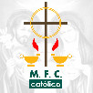

Lo que nos caracteriza como movimiento familiar cristiano.

El MFC en México, cuenta con logo-emblema e himnos propios, que le permiten simbolizar de manera visual y auditiva, su carisma y sus objetivos. Dichos elementos están definidos en nuestro Manual de Identidad y Ordenamientos.
El MFC en México, cuenta con logo-emblema e himnos propios, que le permiten simbolizar de manera visual y auditiva, su carisma y sus objetivos. Dichos elementos están definidos en nuestro Manual de Identidad y Ordenamientos.
Con el objeto de simbolizar el carisma del MFC, el cual radica en la promoción de los cónyuges en su vivencia cotidiana del Sacramento del Matrimonio y del crecimiento de la espiritualidad conyugal, el MFC se identifica con un logo-emblema que consiste en una cruz como elemento principal, la cual ostenta un círculo sobrepuesto sobre la intersección de los brazos con el poste; a ambos lados del poste y al nivel de su arranque, se ubican dos lámparas, de cada una de las cuales brota una llama que apunta hacia el círculo sin llegar a tocarlo. En la parte inferior del emblema, se inscriben las letras “M. F. C.” y debajo de ellas, la palabra “católico” con letras minúsculas en formato inverso. También puedes ver el Himno del MFC